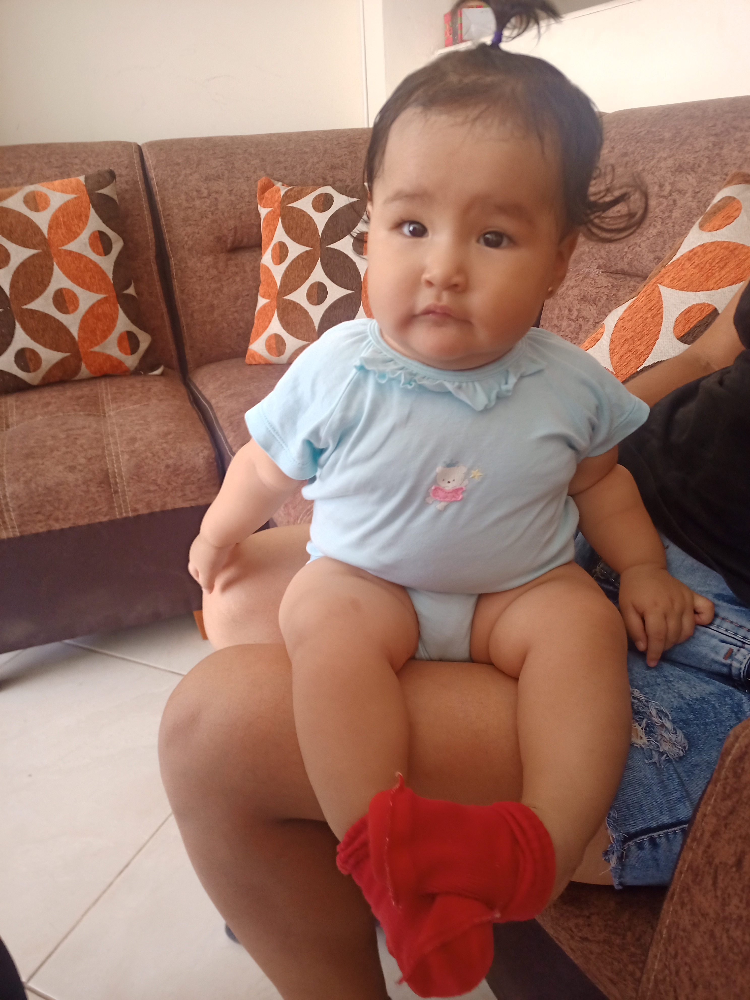
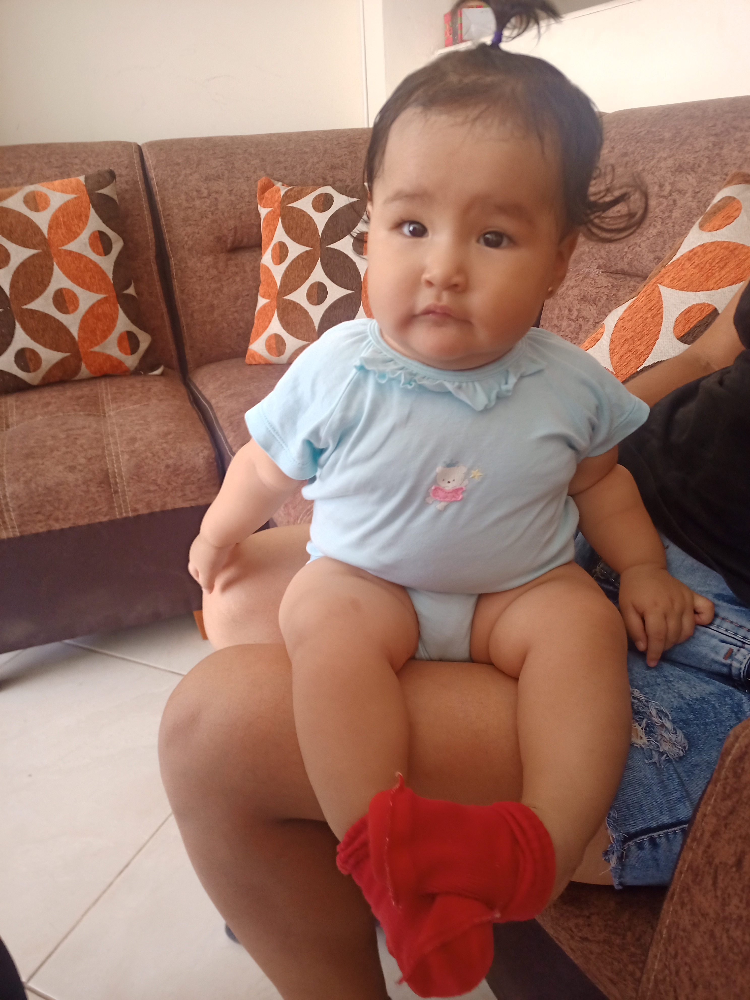

Lo siento mucho Margorie...
Hola Margorie se que no quieras hablarme pero al menos lee esto que te
escribí en este sitio que no se si te acuerdes había hecho para tu
cumple hace unos años... Hoy no pude evitar dejar de pensar en ti, de
lo que paso y de la forma en la que te hablé o traté, se que no fue la
mejor y estuvo mal, lo siento mucho, me deje llevar por lo que sentía
y simplemente lo deje salir, cosa que estuvo mal, perdón por eso uu,
se que aún hay cosas y actitudes que tengo que mejorar y se que lo voy
a lograr, porque yo lo puedo todo xd, viste mi ego?, bueno
continuando, son cositas que tengo que aprender a cambiar en mi, no
dejarme llevar por como me tratan o me hablan, mas si viene de
personas a las que le tengo un cariño inmenso.
Sabes que aún siento cosas por ti y no se si después de esto tu las
sigues sientiendo por mi, pero lo que si se es que siempre contaremos
el uno con el otro, somos muy buenos amigos, los mejores, como
nosotros ninguno xd, hemos pasado por varias discusiones pero el
cariño que nos tenemos creo yo puede más.
En fin, no te mereces nada malo peque, eres la mejor persona que he
conocido, amable, cariñosa, divertida y todo lo bueno que un hombre
puede pedir, siempre te querre un buen, como ni te lo imaginas.
Bueno ya terminando para no aburrirte, le escribí a un amigo para
pedirle un favor, me mando un audio pero estaba en otro idioma, así
que lo traducí y escribí lo que me dijo.
"Margorie, soy Han Seo Jun, perdona
a mi amigo Fernando
Altamirano, haces feliz al mmuchacho, es capaz de todo por ti."

 
